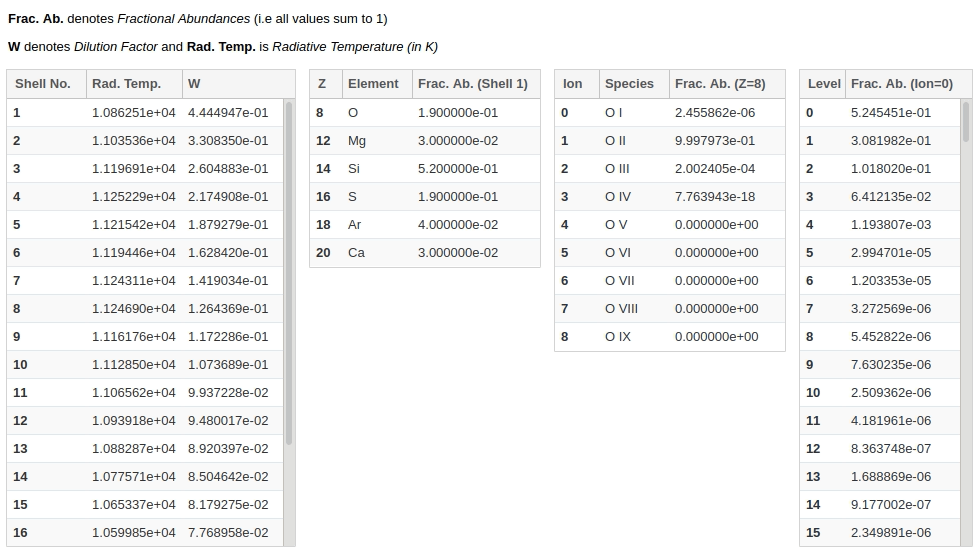

And GSoC’20 has finally ended! Last three months of my project gave me an incredible learning experience. Not only did I improve my software development skills but I also got to know about how Astrophysics Research happens. Following is the report of the work I did in these Summers at TARDIS.
GSoC'20 with TARDIS
Final report of my work during Google Summer of Code 2020 at TARDIS
Overview
TARDIS is an Open Source Astrophysics Org which provides Python packages for rapid spectral modeling of Supernovae. In simpler terms, it allows researchers to quickly simulate the exploding Stars. In GSoC’20, my project was to build a GUI that makes it easier for researchers to explore the data of a simulated Supernova model, without knowing its internal data structure. This GUI needed to be implemented as several Jupyter widgets that can run within Notebook by simply passing the model to a tardis constructor. Hence most of my work revolved around developing a widgets subpackage within tardis that allows users to construct a widget of their interest for the model they’re working with.
In this report, you can find the code of all the widgets I developed in the last three months of GSoC. But if you’re interested to know about the cool Astrophysics concepts behind my work, I encourage you to check out my blog series:
- GSoC’20 Episode-1: Interactions with Supernovae! - Importance of studying Supernovae; chemical elements present in shells of Supernova ejecta and how they leave their fingerprint in the observed light spectrum.
- GSoC’20 Episode-2: Unpacking the Data hidden in Light - Different interactions experienced by the light packets escaping a Supernova, and how TARDIS constructs spectrum from the information packets have.
- GSoC’20 Episode-3: Reading between the [Spectral] Lines - Discerning chemical species from the features in Supernova spectrum, Doppler shift of spectral lines due to moving ejecta, and matching of the modelled and observed spectra.
Work Product
The project deliverables I produced during GSoC’20 can be summarized as follows:
Shell Info Widget
This widget allows users to explore the chemical abundances in different shells (computational partitions) of the modeled Supernova ejecta. It consists of four interlinked tables - clicking on any row in a table, updates the abundance data in the table(s) right of it.

- Developed a demo of Shell Info Widget as a notebook where I developed its prototype and then progressively refined to make it ready for putting it in the module - #1146
- Created a subpackage for widgets and wrote an object-oriented interface (as a module) for constructing and displaying Shell Info Widget, along with the unit tests and documentation - #1166
Line Info Widget
This widget allows users to explore the atomic lines responsible for producing features in the simulated spectrum. You can select any wavelength range in the spectrum interactively to display a table giving the fraction of light packets that experienced their last interaction with each species. Using toggle buttons, you can specify whether to filter the selected range by the emitted or absorbed wavelengths of packets. Clicking on a row in the species table shows packet counts for each last line interaction of the selected species, which can be grouped in several ways.

- Developed a demo of Line Info Widget in a notebook where I did several experimentations to make it a fully functional widget (as above) by iteratively adding features to a basic prototype - #1187
- Modified legacy implementation of TARDIS Kromer Plot (spectrum as a stacked area chart showing different packets’ interactions it is composed of) so that it can be used in Line Info Widget instead of a simple spectrum. I made sure it can be constructed directly from a simulation object or a saved simulation model (HDF) and has data of both real and virtual packets. But before I could convert its plotting method (implemented in matplotlib) to interactive plotly, we realized it’s overly complicated & outdated and needs to be fixed first. So we decided to put it on hold until we release Line Info Widget with the simple spectrum, to manage the GSoC deadline - #1241
- Created an object-oriented interface for generating Line Info Widget as a module within widgets subpackage, along with unit tests and code documentation. Also made several restructuring changes in widgets subpackage to improve it - #1264
Demonstration of Widgets in Docs
The essential part of any GUI is to let users know not only how to use it but also how to make the best use of it. For this, I created a TARDIS Widgets section in TARDIS docs wherein I included a tutorial notebook to generate widgets so that anyone can quickly try it out themselves. Besides I included a page to explain in detail what each widget does and the helpful features they offer. Thanks to the excellent review by my mentors, I made sure that the explanation of physics involved in using the widgets is accurate. You can access this at TARDIS Widgets section in our docs, as soon as #1280 is merged.
Other Contributions
Besides working on the widgets (my main project), I came across several other things that needed to be done for making TARDIS better:
- Applied code style Black throughout the TARDIS to make code more readable - #1201 , #1213
- Added contributor guidelines to help new contributors - #1237
- Fixed how virtual packet properties are saved in HDF by determining the virtual packet logging status at run-time instead of saving it in configuration file - #1254
- Git-ignored several files that gets generated while developing TARDIS - #1139 , #1159
- Fixed kromer plotter producing double plots when used in notebook - tardisanalysis#34
- Made plot size in quickstart notebook of TARDIS docs larger - #1149
- Opened multiple issues for the overall improvement of TARDIS which can be accessed from this list
What's Next
The end of GSoC does not mean my contributions to TARDIS will end. It has always been my pleasure to hear it from the community that my work is making their research easier. And learning about the involved Astrophysics concepts while developing software, has always inspired me to continue contributing.
There are lots of ideas we have on our project board about the next steps. The priority tasks that I will likely work on next are:
- Adding Kromer Plot to Line Info Widget i.e. finishing PR#1241
- Creating a widget that shows iterations of a TARDIS run as a progress bar, along with relevant info like model convergence, etc.
Conclusion
TARDIS now has a new widgets subpackage which makes it easier for Astrophysics researchers to interactively explore the data of a modeled Supernova, within their Jupyter notebooks. Currently, I have developed widgets for Shell Info and Line Info but there are several other areas where interactive visualization and widgets can help. Besides the simplicity of exploration, another advantage of having widgets and visualization is that they showcase the capabilities of TARDIS and help new users to understand them better because now they can interact with it!
Like last year, this year also GSoC has helped me evolve by giving me knowledge about multiple fields as well as by allowing me to connect with a group of awesome people. I’m privileged to get a chance to work under such great mentors - Wolfgang Kerzendorf, Yssa Camacho, Mark Magee, James Gillanders, Marc Williamson, Alice Harpole, and several other TARDIS members - who played a significant role in helping me complete this project. It is always fun to work with Open Source communities of your interest and thanks to Google Summer of Code that I got opportunity to work with TARDIS!